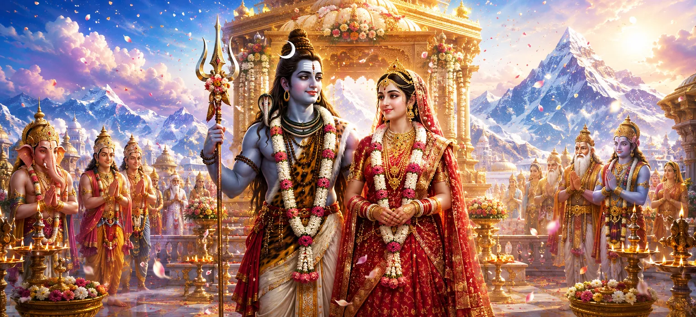

After years of devotion, penance, divine tests, and sacred preparations, the long-awaited union of Lord Shiva and Goddess Pārvatī finally reached its glorious culmination. Before the assembled gods, sages, celestial beings, and devotees, the Divine Couple entered into the eternal bond that symbolizes the union of Shiva and Shakti, consciousness and energy, purity and power.
As sacred mantras echoed through the wedding pavilion, the divine marriage entered its most significant stage. Every rite was performed with precision according to eternal Vedic tradition, transforming the ceremony into a cosmic event witnessed by all realms.
King Himālaya and Queen Menā watched the ceremony with immense happiness. Their beloved daughter, who had performed severe austerities for countless years, was now united with Lord Shiva, the Supreme Lord of the Universe.
The gods rejoiced as they witnessed the fulfillment of a divine destiny. Brahmā, Viṣṇu, Indra, and countless celestial beings offered prayers and blessings while heavenly music filled the skies.
This marriage was far more than a worldly ceremony. It represented the eternal union of Shiva and Shakti, the inseparable principles that sustain, guide, and transform the universe. Their union became a source of harmony for all creation.
As the marriage progressed, flowers showered from the heavens, divine fragrances spread through the air, and auspicious signs appeared everywhere. Nature itself seemed to celebrate the sacred union.
The marriage symbolizes the eternal union of Shiva and Shakti.
Pārvatī's unwavering faith and penance achieved their divine goal.
The divine marriage brought peace, balance, and auspiciousness to creation.
The marriage of Shiva and Pārvatī was not merely an event celebrated on Earth. It was a cosmic union whose influence extended across all realms of existence. Gods, sages, celestial beings, and even nature itself rejoiced in this sacred occasion.
The marriage of Shiva and Pārvatī teaches that true union is founded upon devotion, sacrifice, patience, and spiritual understanding. When love is guided by dharma and divine purpose, it becomes a source of strength and blessing for all.
The divine marriage fulfilled the destiny foretold by sages and desired by the gods. Through this sacred union, the future protector of the heavens would eventually be born, ensuring the victory of righteousness.
Songs, prayers, and celestial music echoed through the heavens as the marriage concluded. Every realm celebrated the union of the Divine Couple, recognizing its significance for the welfare of the universe.
"The union of Shiva and Shakti is the eternal harmony from which all creation draws its strength."
The sacred marriage of Lord Shiva and Goddess Pārvatī has now been completed, bringing joy to the heavens and blessings to the worlds. Yet the celebrations are far from over. Continue to the next chapter to witness the celestial festivities that follow this divine union and the rejoicing of gods, sages, and heavenly beings.